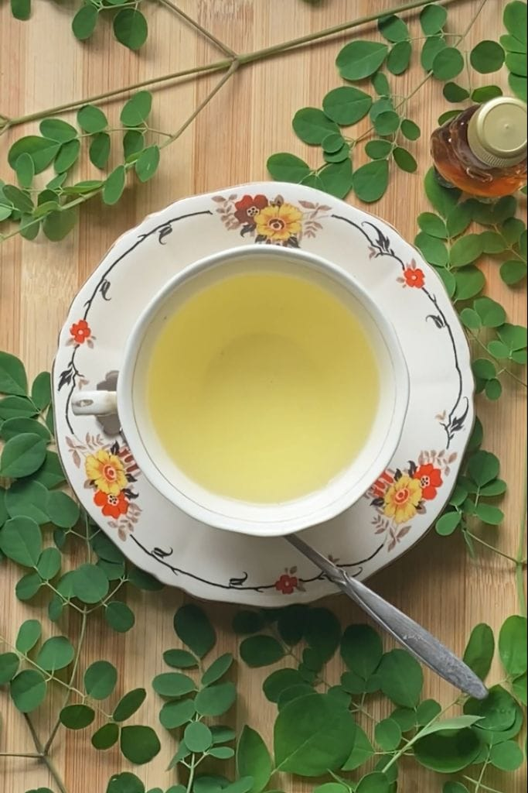
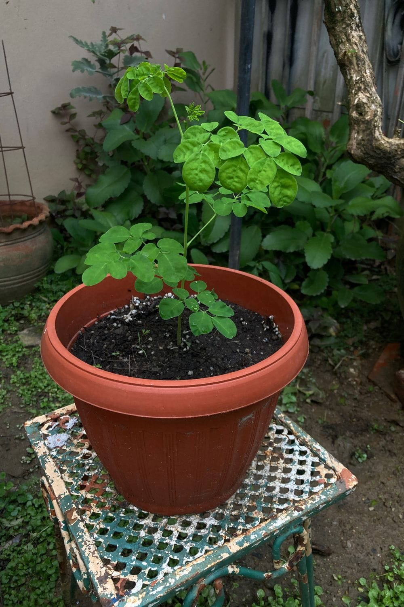
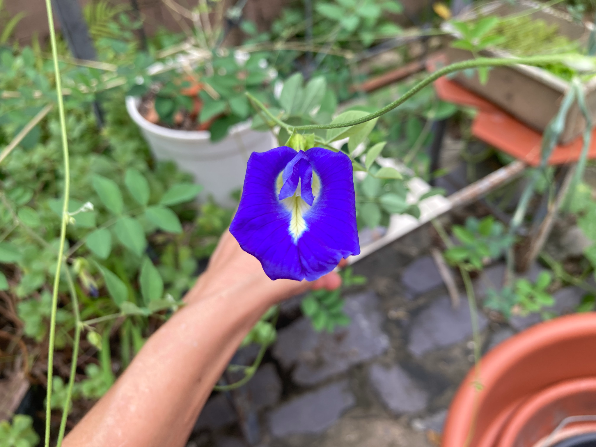
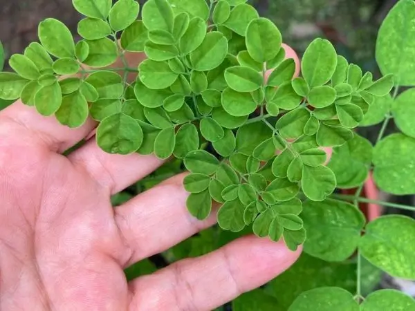

A little garden.
A world of
good things.
Grow herbs, gather a handful of leaves, and bring something fresh to your table. Welcome to Sansa Herbs.
Explore the garden Make a cup of tea →
From the garden to your cup
Small spaces. Fresh leaves. Simple pleasures.

A place for herbs,
even in a pot
Explore the growing side of Sansa Herbs, starting with moringa and the plants close to home.
Meet the moringa →
Butterfly pea,
from vine to cup
A closer look at the flowers I grow and gather for a colorful cup of tea.
Read the tea article →
Get to know
your fresh herbs
Make room for the leaves, flowers and everyday garden moments behind each recipe.
Inside Sansa Herbs →It starts with
a handful of leaves.
Moringa has a place at the heart of Sansa Herbs—from a young potted plant to fresh leaves, homemade powder and a favorite cup of tea.
Make moringa powder →Rooted in a real garden.
I’m building Sansa Herbs around the plants I have access to here in Trinidad, with room for small-space gardening, herbal teas and everyday kitchen inspiration. There’s always another leaf, flower or seed to get curious about.